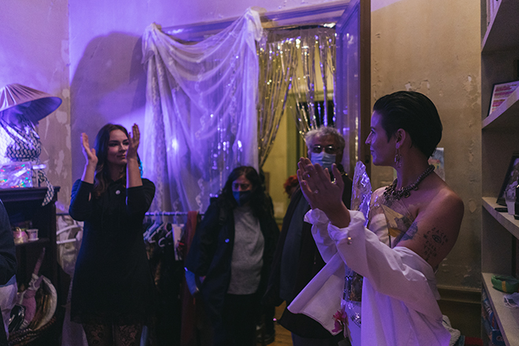
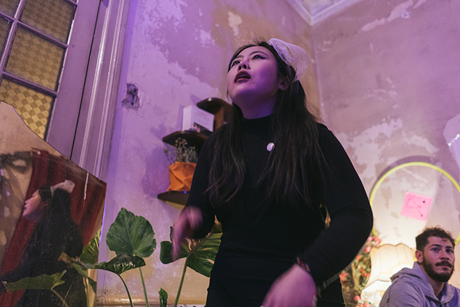
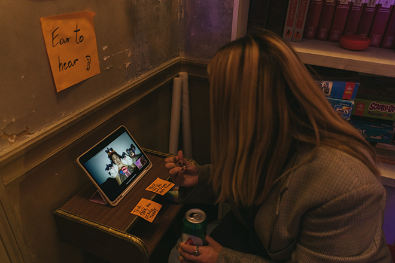
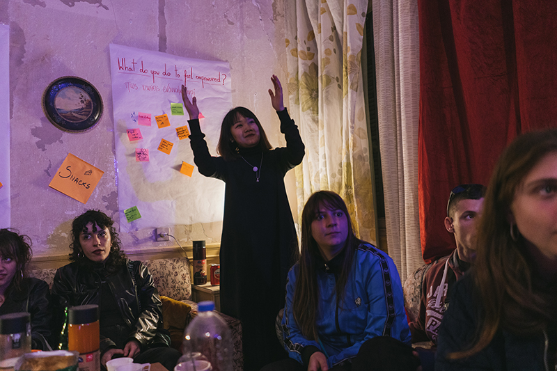
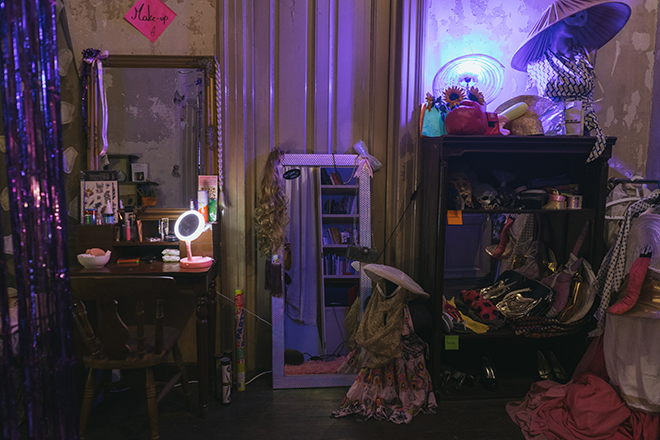
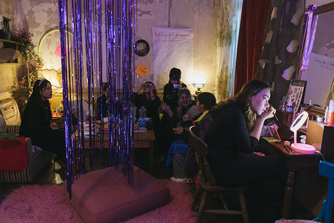
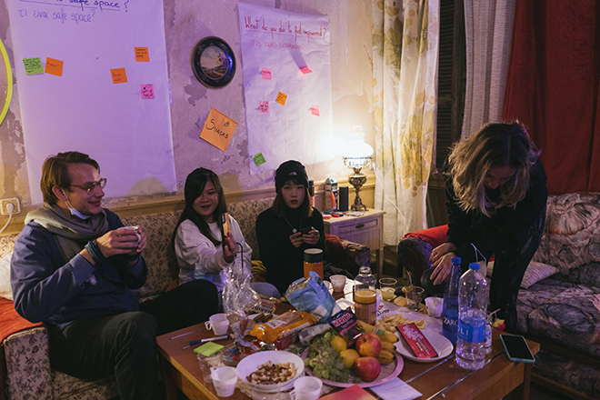
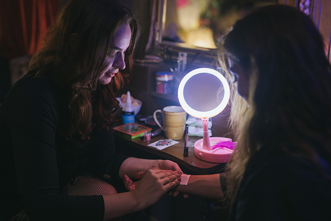

- 媒体/Meida Based
- Food memory
- Liberated Fish
- Kin Feasting
- A Room for One's Own
- 绘画/painting
- 摄影/photograph
- 文字/writing
- 关于/about
- 联络/contact
A Room for One's Own (Strawberries and Cigarettes) | Performance based
Communitism (Athens, GR)
Oct. 2021
Description: As a collective we are interested in the topics concerning forming of identities through analog and digital spheres, and power structures surrounding those identities. As a group formed by feminities we were aiming to create a space of exploration, for all the voices to be heard without discrimination. Space for one to experiment, to try on different versions of oneself in a safer setting, relax, and enjoy a cup of tea. To talk or lie down or stare into one’s reflection for a minute or two hours. Combining spatial design with performance. A rhythmic chant including words and sentenced that emerged in the process of collaborative healing. Words of anger, dissatisfaction but also empowerment and scream for better future. Simple powerful sentences, combined with simple rhythmal clapping and stepping. Speaking from the feminine position, coming in with personal stories and experiences relative to gender identity understood through multicultural lense, we aimed at providing a space for a breath.
Performing
   
Chant
(Quietly to the audience)
All
"Cuerpo cuerpo, Body body"
Lulu
"I want to report the silence and fill it with our stories."
(Steps + clapping)
"Cuerpo cuerpo, Body body"
Slience
Weronika
"It happened in the morning, it happened at night"
"It happened in the club, it happened in the park"
Yris
"We summon the survivors"
"We summon the oppressed"
"The ones who still have fear"
"And haven’t yet confessed"
Ruizhao
"This is a spell for you to never feel alone again."
(Steps + clapping)
Lulu
"I came here with more questions than answers."
(Steps + clapping)
Ruizhao
"破碎 无声地哭泣 一点一点沉下去 她只是一朵蔷薇花 不要过多想象 它和这个世界上任何其他东西一样。"
(Steps + clapping)
Yris
"Nor Buttler, Nor Hooks, Noir Simone de Bovuoir"
"All I have in my pockets, Are bits of espoir."
Steps + clapping)
Weronika
"Ile jescze będziemy się prosić?"
"Co będzie wystarczajaco ciężkie?"
"Jeśli mój krzyk nie jest wystarczajaco głośny"
"Czy krzyk tysiąca będzie?"
(Steps + clapping)
Lulu
"世上只有妈妈好，有妈的孩子像块宝，投进妈妈的怀抱，幸福少不了。"
Yris
Fun poem song
(Improvised)
"Cuerpo cuerpo, Body body"
(music)
end
the Whole room & Leisure time
   
Responsibility
Chant performing: Yris Apsit, Weronika Przysada, Ruizhao Sun, GAN LU
Others: Hei Ying Mimie CHEUNG, Tanya Varreri, Katerina Pataka(online video performing)
Reference
Youtube links
1. Victoria Santa Cruz- Me gritaron negra/ They called me black (woman)
2. Angel Torticollis
3. CONTRA_POINTS
4. PHILOSOPHY TUBE
5. GEN Z HUMOUR
6. Taka Taka, Jennifer Hopelezz, Stefan Silvestri, Dinah de Riquet-Bons
Paper
7. Drag Performers’ Perspectives on the Mainstreaming of British Drag: Towards a Sociology of Contemporary Drag
8. ‘Can you get more American than Native American?’: drag and settler colonialism in RuPaul’s Drag Race
Books
9. Bodies that matter, Judith Butler
10. Queer Art, Lorenz (book in drive)
Installation & Art reference
11. N.O.Body
12. Anna Natt